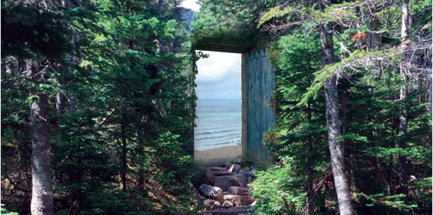

Understanding Your Soul Path
Morristown NJOctober 18-19, 2019
In this two-day workshop, we explore the big questions:
“Why am I here?”“Why do I continue to suffer?”“Why do I get in my own way?”
Stephanie has brought together a wealth of material from Caroline Myss’ Sacred Contracts, David Whyte’s Three Marriages and Elizabeth Gilbert’s Big Magic (and more) as well as her many years attending and facilitating classes and workshops.
Using experiential group exercises, journaling and imagery, come adventure, explore, and learn from each other!
Check Stephanie's EventBrite for upcoming sessions near you!